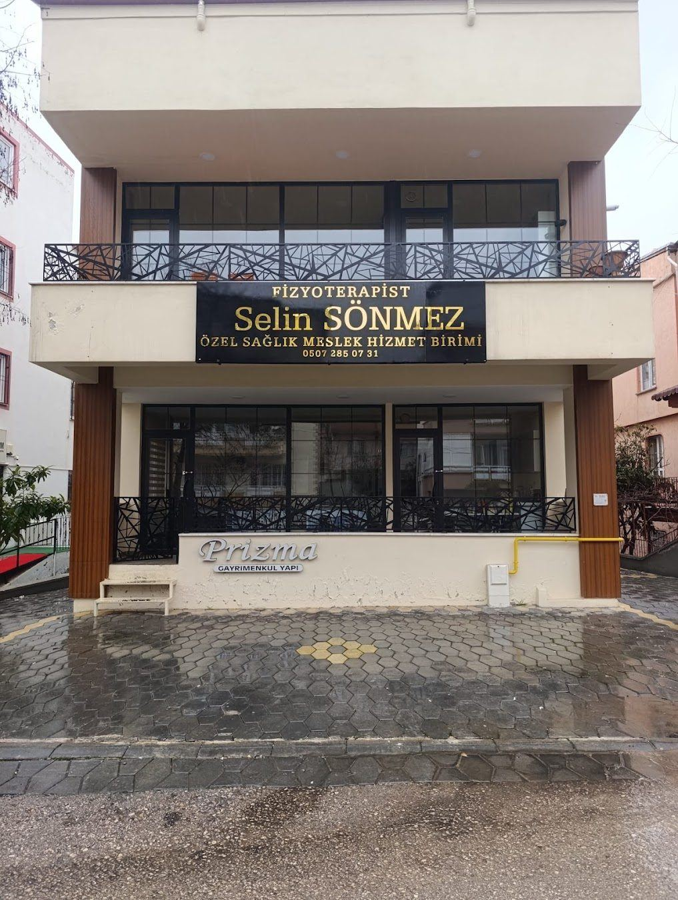

Fizyoterapist, Özel Sağlık Meslek Hizmet Birimi
Ağrısız bir gün için hareket edelim
Manuel terapi, klinik pilates ve egzersiz temelli rehabilitasyon, Güvenevler'de.
Çalışma saatleriHafta içi 09:00-20:00
Güvenevler MahallesiŞehitkamil, Gaziantep
Tedavi alanları
Ağrının kaynağına yönelik, egzersiz temelli rehabilitasyon.

Ağrınız nerede?
Bölgeyi seçin, size uygun olabilecek tedavi yaklaşımını görün.
Hangi bölgede şikayetiniz var?
Bir seçenek seçin
Size uygun olabilecek tedavi seçeneğini ve ayrıntılı bilgi sayfasını gösterelim.
Tüm seçenekler
Kesin değerlendirme muayene sonrası yapılır.
Rehabilitasyon süreci
Değerlendirmeden ev programına kadar her adım planlı.
Değerlendirme
Ağrı, hareket açıklığı, kuvvet ve postür ayrıntılı olarak incelenir.
Tedavi planı
Şikayetinize ve günlük hayatınıza uygun seans sayısı ve yöntemler belirlenir.
Seanslar
Manuel terapi ve egzersizlerle her seans bir önceki üzerine kurulur.
Ev programı
Kazanımları korumanız için evde uygulayacağınız egzersizler öğretilir.
Merkezimiz
Size uygun bir saat bulalım
Formu doldurun ya da arayın, randevunuzu birlikte planlayalım.